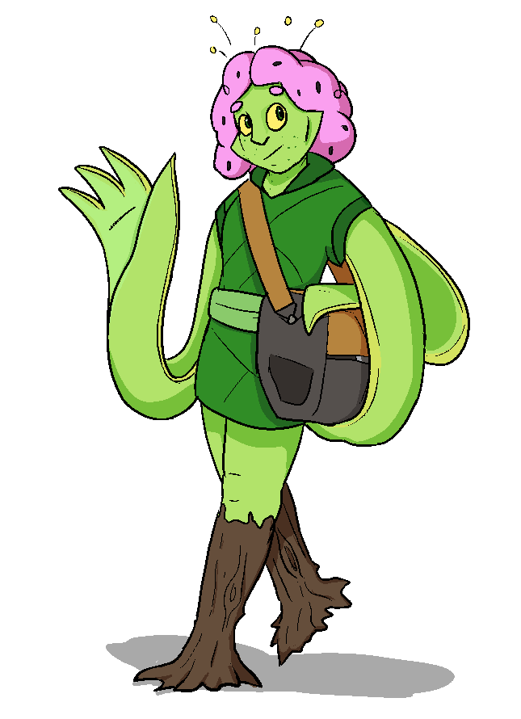

Darue
Darue | |
|---|---|
|  | |
| Full Name | Darue |
| Pronouns | They/Them |
| Species | Lightfae |
| Age | 32 |
| Height | 165 cm / 5'5" |
| Occupation | Librarian |
| Relationships |
Uma - Partner Root - Friend & Former Roommate Amber - Friend |
| Games GM'd | 12 |
| Headphones of Choice | Modded pair of TK◇786 |
Backstory
Darue was born and raised in The Underground on one of the higher levels, becoming familiar with both the underground and surface above.
In their early life they struggled with depression, among other mental issues, leading to a tendency to isolate from others and hide their condition. This mostly manifested in periods of intense self loathing, and long stretches of emotional apathy.
Eventually, they entered higher education, unsure of what to do with themselves. They ended up sharing a room with Root - going by Tau at the time - who was in some ways in a worse state than they were. Darue found it gave them a reason to keep waking up in the morning. Between the stress of class and the crushing existential weight of being alive, they had to make sure their roommate remembered to eat. In hindsight, they can see it wasn't a very healthy relationship, but it kept them going.
It was this, along with a window of unsually good mood, that got Darue to finally seek out professional help and soon begin medication. Though it took time, they were shocked how much more enthusiasm and energy they found themselves with.
After school, they began volunteering at a library in their hometown, eventually taking some classes on library studies and becoming a full time staff member. In their free time, they began pursuing hobbies they'd always been interested in but lacked the energy for. They had a lot of lost time to make up for.
They fell out of touch with Root, but later re-encountered them at the library, having undergone his own treatment process and doing better. The two of them hit it off again, Darue roping them into a tabletop gaming campaign they were trying to get running.
Eventually, they met Uma, and the two of them started pursuing a relationship.
Character
Darue is enthusiastic, intelligent, though a bit reserved. They can be slow to open up, but when they find someone they click with, they stick around. They have a seemingly endless reserve of knowledge about their myriad of hobbies, and if you'll lend an ear they'll talk for hours.
They're a bit of a chatterbox to friends in general, and usually a good person for others to bounce their thoughts off and get feedback. Amber and Root in particular hold regular, long conversations with them about their various projects, be they mechanical or writing.
Of their interests, their fascination with audio equipment and tabletop games are the two standouts. They have a sizeable collection of board and role-playing games they can never seem to find the right audience for, and a smaller collection of records and listening gear.
Trivia
- Darue has 4 arms, tending to keep each pair sandwiched together to make a more human-looking hand. If they're not paying attention - or just need more hands in a given moment - they can move all 4 independently.
- Darue's 'hair' has a similar texture and appearance to freshly picked cotton.
- Darue has a stutter, a vocal tic they can't seem to shake.
- Darue is demisexual.